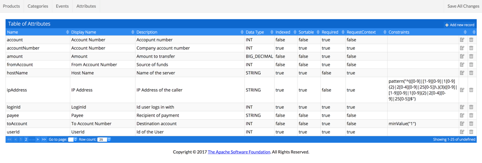
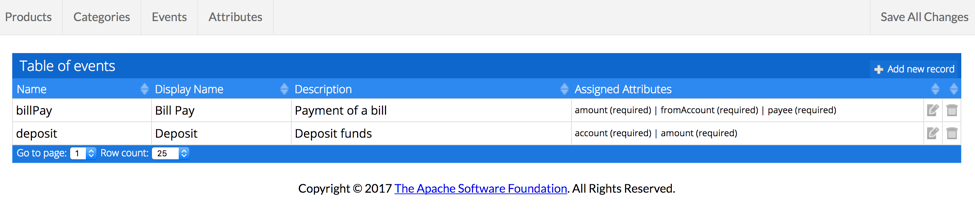

Log4j-Audit uses a Catalog that describes the attributes and events that can be logged. The catalog is required to generate the audit events and to validate events being logged.
The Catalog and Catalog Editor
Log4j Audit provides an AuditCatalog WAR that can be deployed to a servlet container for use in creating and maintaining the catalog. Because the Catalog Editor requires the credentials to be configured on the machine where the web application is running and it performs no other authentication of the user, it is recommended that the Catalog Editor be run locally on the user’s machine.
The catalog provides screens to maintain the attributes, events, products, and categories defined in the catalog. Changes made to these entities are stored in an in-memory database until the user elects to persist them, at which time the catalog is exported as JSON and stored into the configured git repository.
Because the editor can only edit the default catalog and the persistant storage is the JSON file in the Git repository, the Catalog Editor is configured to only use the in memory database.
Attributes
Attributes are the discrete data elements to be captured in audit events. One of the goals of the audit catalog is to avoid having what are essentially the same attributes with different names in various events. When creating new events users are highly encouraged to scan the existing attributes for one that is already present.
Attributes can have aliases and examples, however the Catalog Editor provides no way to edit these and Log4j Audit currently doesn’t do anything with these fields.
The attribute edit screen allows attributes to be defined, modified or deleted. The fields that may be modified are:
| Field |
Description |
| Name |
The name of the attribute as it will be known to Java. It is expected to be defined in camelCase. |
| Display Name |
The text that should be used to display the field in an application |
| Description |
The description of the attribute as it would appear in help text in a UI. |
| Data Type |
The type of data contained in the field. Must be one of BIG_DECIMAL, BOOLEAN, DOUBLE, FLOAT, INT, LIST, LONG, MAP, STRING |
| Indexed |
True if this field should be indexed when stored in a database. |
| Sortable |
True if this field should be sortable when displayed in a UI. |
| Required |
True if this field is required by default |
| Request Context |
True if this attribute is provided in the RequestContext |
| Constraints |
Rules to use to validate the value. Must be null or one of ANYCASEENUM, ENUM, MAXLENGTH, MAXVALUE, MINLENGTH, MINVALUE, PATTERN |
Data Types
An attribute must be defined as being one of the supported data types. Log4j Audit will use this information when generating the event Interfaces. By doing so, the data being logged will be guaranteed to be of the correct type at compile time. When logging using the Audit Service the data will be validated for the correct type when the event is received.
Constraints
If a constraint is present on an attribute definition Log4j Audit will validate the value when the event is logged. The enum types must provide a list of valid values. The min and max constraints must be configured with an appropriate value. The pattern constraints must be configured with a regular expression to apply against the value. If the data fails to validate against a constraint the attempt to audit the event will fail. Using constraints can prevent garbage data from being included in the audit database but at the cost of potentially having auditing fail.

Events
Events represent the aggregation of attributes to be collected when a specific action is performed. Event names should identify what action took place and the associated attributes should identify the key characteristics of who performed the action and what they did.
Events can have aliases, however the Catalog UI provides no way to edit them and Log4j Audit currently doesn’t do anything with alias fields.
The event edit screen allows events to be defined, modified, or deleted. The fields that may be modified are:
| Field |
Description |
| Name |
The name of the event as it will be known in the catalog. It is expected to be defined in camelCase. |
| Display Name |
The text that should be used to display the name of the event in an application |
| Description |
The description of the event as it would appear in help text in a UI. |
| Assigned Attributes |
The attributes to be associated with this event and whether they are required. |
RequestContext attributes are always part of audit events whether they are declared or not. Specifying a non-RequestContext attribute is required for it to be associated with an event. Specifying a value of True or False for whether the attribute is required to be present will override whatever definition was present when the attribute was defined. If neither box is checked the attribute definition’s required attribute will be honored.

Products and Categories
Events may be grouped into products and categories, however it is not required that an event be included in a product or category. Log4j Audit doesn’t use the products or categories itself, however UI tools that display audit events may choose to filter based on products or categories.